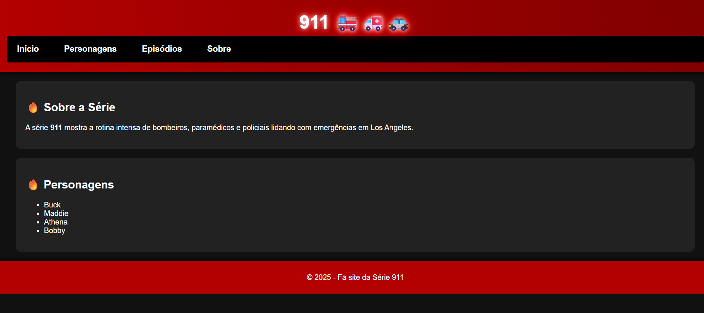
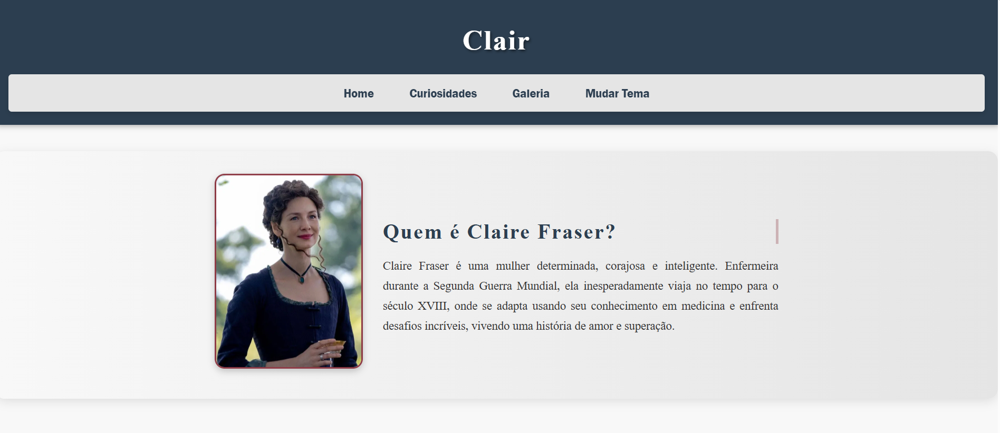
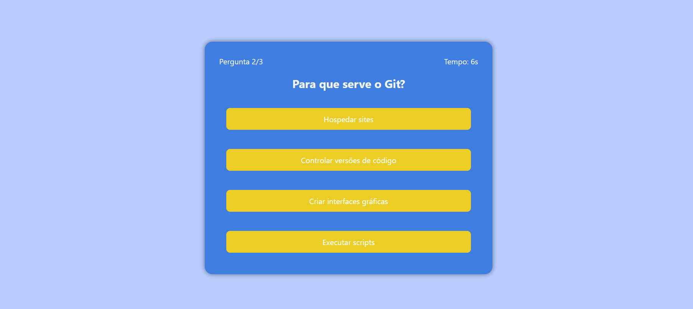

Meus Projetos

📊 Dashboard Interativo
Dashboard criado com HTML, CSS, JavaScript e Chart.js, contendo gráficos dinâmicos e filtros interativos.

🔥 Site da Série 911
Projeto feito para praticar HTML, CSS e JavaScript com foco em layout escuro, menu fixo e seções com ícones temáticos.

🌐 Site da Claire Fraser
Site pessoal criado para praticar HTML e CSS com animações, inspirado na série Outlander.

🧠 Tech Quiz
Quiz interativo com perguntas da área tech, timer por pergunta, pontuação e feedback visual. Desenvolvido com HTML, CSS e JavaScript.